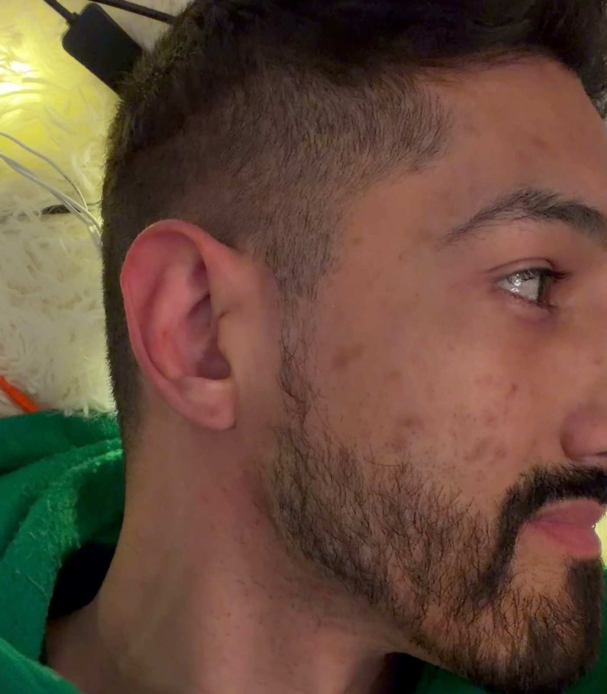
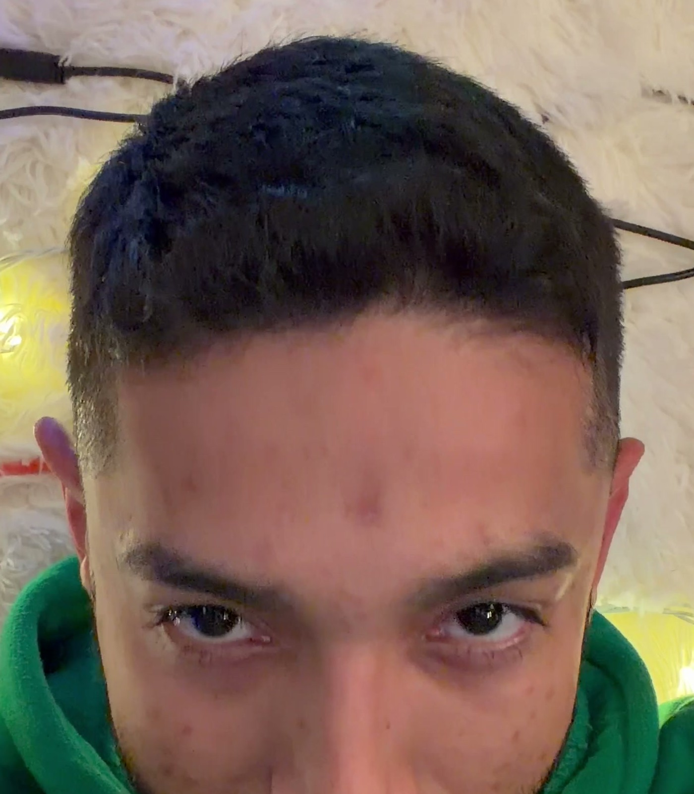
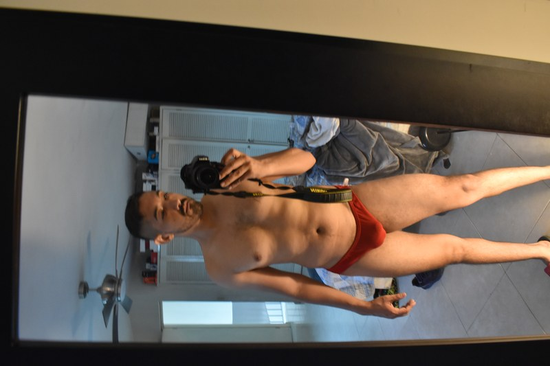
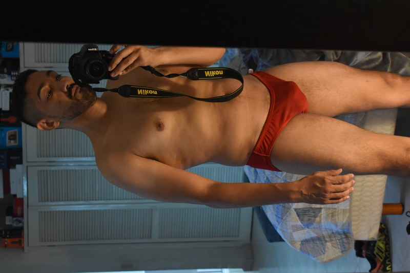
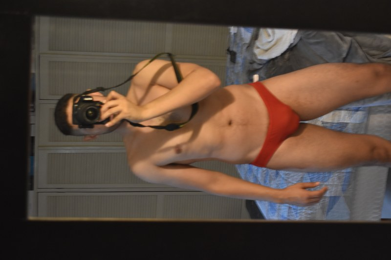
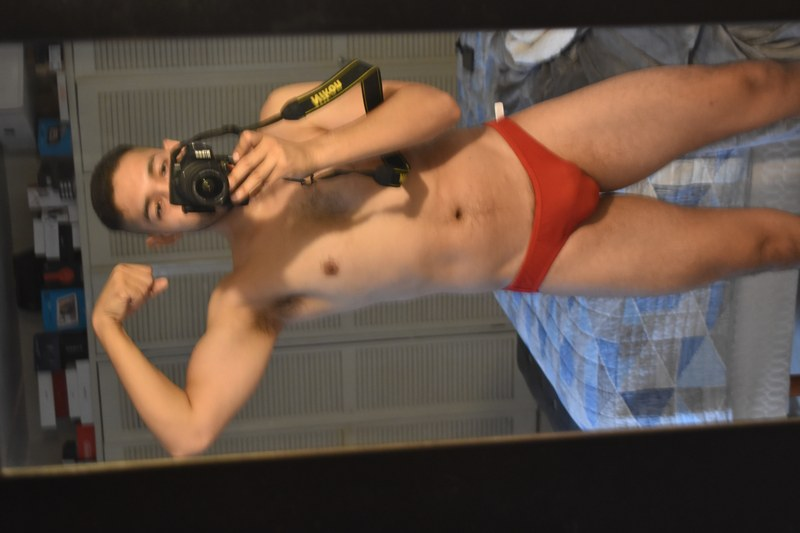

Muestrario de fotogramas 4K nativos extraídos de tus videos en iPhone 17 Pro Max con prueba de Digital Foundation (base suave que unifica el tono y atenúa manchitas sin eliminar nitidez de barba ni crear "pocitos" falsos), junto con las fotos en traje de cuerpo completo sincronizadas desde Google Drive.


Estas fotos de tu sesión en traje elegante cubren las tomas de cuerpo entero y medio cuerpo corporativo (C-01 a C-04 formal).



